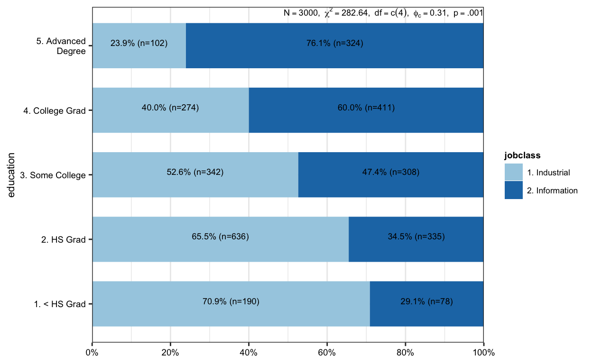
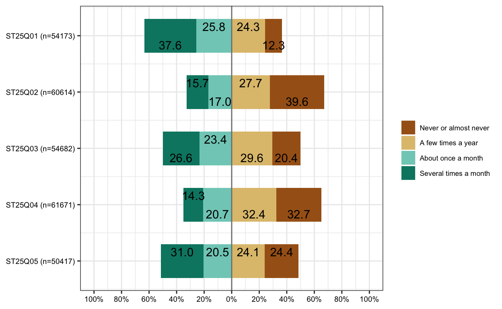
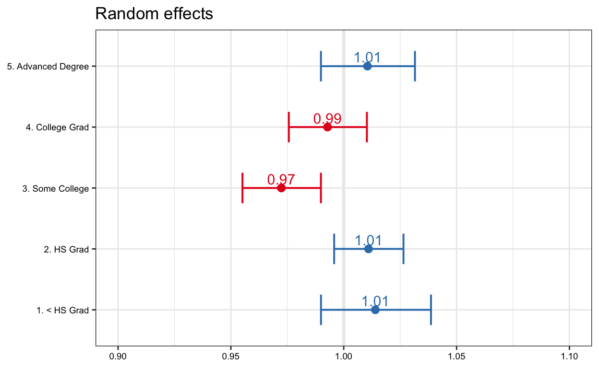
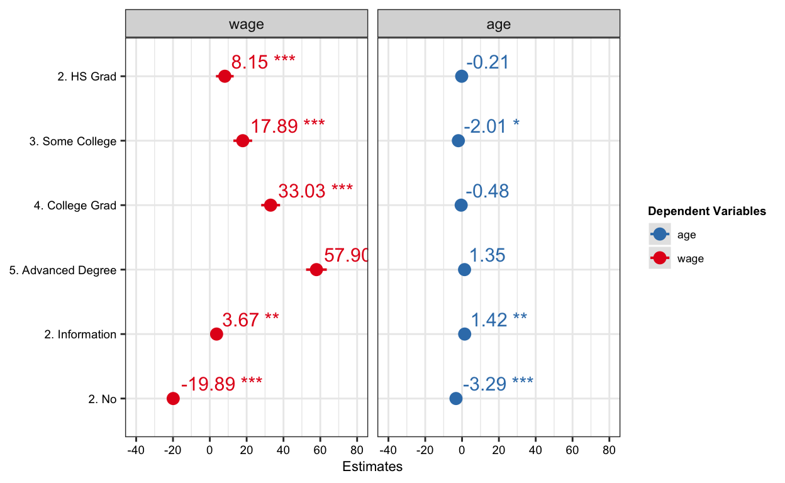

This post as a video
I recommend to watch a video first, because I highlight things I talk about. It’s less then 9 minutes long.
All the functions you’ll learn from this article
view_df(), plot_frq(), save_plot(), plot_grpfrq(), plot_grid(), plot_xtab(), tab_xtab(), plot_gpt(), plot_likert(), plot_model(), tab_model(), plot_models()
Load all packages at once to avoid interruptions
Plot data
View dataframe with view_df
View data-frame (view_df) function with only 4 arguments, (1) your data, (2) show frequencies, (3) show percentages and (4) show missing values, displays a range of numeric variables and the counts + percentages of missing values and categorical variables, giving you a nice big picture of your data.
view_df(Wage, show.frq = T, show.prc = T, show.na = T)| ID | Name | Label | missings | Values | Value Labels | Freq. | % |
|---|---|---|---|---|---|---|---|
| 1 | year | 0 (0.00%) | range: 2003-2009 | ||||
| 2 | age | 0 (0.00%) | range: 18-80 | ||||
| 3 | maritl | 0 (0.00%) |
|
648 2074 19 204 55 |
21.60 69.13 0.63 6.80 1.83 |
||
| 4 | race | 0 (0.00%) |
|
2480 293 190 37 |
82.67 9.77 6.33 1.23 |
||
| 5 | education | 0 (0.00%) |
|
268 971 650 685 426 |
8.93 32.37 21.67 22.83 14.20 |
||
| 6 | region | 0 (0.00%) |
|
0 3000 0 0 0 0 0 0 0 |
0.00 100.00 0.00 0.00 0.00 0.00 0.00 0.00 0.00 |
||
| 7 | jobclass | 0 (0.00%) |
|
1544 1456 |
51.47 48.53 |
||
| 8 | health | 0 (0.00%) |
|
858 2142 |
28.60 71.40 |
||
| 9 | health_ins | 0 (0.00%) |
|
2083 917 |
69.43 30.57 |
||
| 10 | logwage | 0 (0.00%) | range: 3.0-5.8 | ||||
| 11 | wage | 0 (0.00%) | range: 20.1-318.3 | ||||
Plot frequencies with plot_frq, plot_grpfrq and plot_grid
However, we often want to see an actual picture, for example, display frequencies and percentages of categorical variables on a bar plot. For that {sjPlot} package provides a convenient plot-frequencies (plot_frq) function, which does just that. For instance, plotting education shows that around 9% of people in our data did not finish a high school, while around 14% have a PhD.

Since {sjPlot} package works with tidyverse 🥳, we can easily group the data by any other categorical variable, let’s take race, and get frequencies and percentages for every group. plot_grid() function puts several subplots in a single plot and even names the subplots. For instance, a subplot C shows that most of Afro-Americans in our dataset ARE highly educated. And of coarse you can save this publication-ready plot with … surprise surpriiise … save_plot command.

save_plot(filename = "race_vs_education.jpg", fig = p, width = 30, height = 19)quartz_off_screen
2 While seeing counts and percentages of separate groups is cool, we sometimes want to put groups directly near each other. And that’s exactly what plot-grouped-frequencies (plot_grpfrq) function does. For instance, it clearly shows that most of the people with lower education degrees work in factories, while folks with higher education degrees work with information.
plot_grpfrq(
var.cnt = Wage$education,
var.grp = Wage$jobclass)
Plot or display cross (pivot) tables
This IS already useful, however, plot_xtab function goes one step further and displays percentages of jobclasses inside of every educational degree as stacked-bars, where counts are identical to the previous plot, but every educational category as one 100 percent. Such display only reinforces our hypothesis that highly educated folks usually work in the IT and shows a clear association between jobclass and education. As if that were not enough, plot_xtab even tests this hypothesis with the Chi-Squared test of association and displays a significant p-value and a large effect size.
# as stacked proportional bars
plot_xtab(
x = Wage$education,
grp = Wage$jobclass,
margin = "row",
bar.pos = "stack",
show.summary = TRUE,
coord.flip = TRUE)
So, plot_xtab essentially visualizes cross tables, also known as pivot tables. And if for some reason you want an actual table with the results of a statistical test, you can use tab_xtab function instead.
tab_xtab(
var.row = Wage$education,
var.col = Wage$jobclass,
show.row.prc = T)| education | jobclass | Total | |
|---|---|---|---|
|
|
||
|
190 70.9 % |
78 29.1 % |
268 100 % |
|
636 65.5 % |
335 34.5 % |
971 100 % |
|
342 52.6 % |
308 47.4 % |
650 100 % |
|
274 40 % |
411 60 % |
685 100 % |
|
102 23.9 % |
324 76.1 % |
426 100 % |
| Total |
1544 51.5 % |
1456 48.5 % |
3000 100 % |
χ2=282.643 · df=4 · Cramer’s V=0.307 · p=0.000 |
(not part of the video) By the way, we can decide what kind of percentages are calculated, rows or columns or even single cells, whether we want to stack the bars and many more. It will automatically conduct Fisher’s test of association if samples are small (<5).
(not in the video) Plot grouped proportional tables (I am not sure it’s very intuitive)
The p-values are based on chisq.test of x and y for each grp.

Plot histograms of salaries and display averages + SD
But enough about counting, since our dataset is about salaries, let’s figure our who earns more, industrial or information workers? Plot frequencies function, which we used for counting, can also easily answer this question if we give it a (1) wage variable, (2) tell it to plot a histogram, (3) to show an average with standard deviation and (4) to display a normal curve to see whether our salaries are normally distributed. This visualization reveals that industrial workers get 103 thousand dollars on average, while IT crowd gets 17 thousand more.
Wage %>%
group_by(jobclass) %>%
plot_frq(wage, type = "histogram", show.mean = TRUE, normal.curve = TRUE) %>%
plot_grid()
Plot likert scales as centered stacked bars
The last thing I’d like to share with you before we visualize models, is a visualization of likert scale data. If you have same scales or categories across different variables, plot_likert function nicely compares percentages of scales or categories across those variables.
data(pisaitems)
d <- pisaitems %>%
dplyr::select(starts_with("ST25Q"))
view_df(d, show.frq = T, show.prc = T)| ID | Name | Label | Values | Value Labels | Freq. | % |
|---|---|---|---|---|---|---|
| 1 | ST25Q01 |
Never or almost never A few times a year About once a month Several times a month Several times a week |
6682 13143 13995 20353 11436 |
10.18 20.03 21.33 31.02 17.43 |
||
| 2 | ST25Q02 |
Never or almost never A few times a year About once a month Several times a month Several times a week |
24019 16789 10317 9489 4751 |
36.75 25.68 15.78 14.52 7.27 |
||
| 3 | ST25Q03 |
Never or almost never A few times a year About once a month Several times a month Several times a week |
11131 16164 12818 14569 10658 |
17.04 24.74 19.62 22.30 16.31 |
||
| 4 | ST25Q04 |
Never or almost never A few times a year About once a month Several times a month Several times a week |
20145 19961 12768 8797 3622 |
30.85 30.57 19.55 13.47 5.55 |
||
| 5 | ST25Q05 |
Never or almost never A few times a year About once a month Several times a month Several times a week |
12317 12141 10314 15645 15165 |
18.78 18.51 15.73 23.86 23.12 |
plot_likert(d) 
Plot model results
Visualizing data is quite, but let’s get to the really cool visualization stuff!
Plot predictions
plot_model function is the actual reason I love {sjPlot} package. I literally use it everyday!
For example if I want to know how education influences salary, I’ll plot predictions from a simple linear model. Plotting prediction immediately tells me the story. Namely, people who did not even finish a high school, have the lowest salary compared to any other education level. Moreover, we can see that increasing education level means increasing salaries. So, education matters!

Plot coefficients
The only thing we can’t see from this plot is whether this increase is significant or not. We could use a well known summary table for that, but the output, although useful, is not really pleasing to the human eye and is not suitable for publication.
summary(m)
Call:
lm(formula = wage ~ education, data = Wage)
Residuals:
Min 1Q Median 3Q Max
-112.31 -19.94 -3.09 15.33 222.56
Coefficients:
Estimate Std. Error t value Pr(>|t|)
(Intercept) 84.104 2.231 37.695 < 2e-16 ***
education2. HS Grad 11.679 2.520 4.634 3.74e-06 ***
education3. Some College 23.651 2.652 8.920 < 2e-16 ***
education4. College Grad 40.323 2.632 15.322 < 2e-16 ***
education5. Advanced Degree 66.813 2.848 23.462 < 2e-16 ***
---
Signif. codes: 0 '***' 0.001 '**' 0.01 '*' 0.05 '.' 0.1 ' ' 1
Residual standard error: 36.53 on 2995 degrees of freedom
Multiple R-squared: 0.2348, Adjusted R-squared: 0.2338
F-statistic: 229.8 on 4 and 2995 DF, p-value: < 2.2e-16Luckily for us, plot_model() with the argument show.values = TRUE transforms a boring summary table into this informative picture, which shows the increase in salary in thousands of dollars as compared to no education (Intercept, not shown) with 95% confidence intervals and significance stars which indicate that those increases in salary are significant.
(not in the video) Where vertical 0 indicates no effect (x-axis position 1 for most glm’s and position 0 for most linear models)
plot_model(m, show.values = TRUE, width = 0.1)+
ylab("Increase in salary as compared to no education")
Table with coeffitients, 95% CIs, p-values & more
However, sometimes we still need to report the summary table, but we need to make it look better. And that’s where tab_model command comes into play. Within tab_model we can show the reference level, hide the intercept and change the style of p-values.
tab_model(m,
show.reflvl = T,
show.intercept = F,
p.style = "numeric_stars")| wage | |||
|---|---|---|---|
| Predictors | Estimates | CI | p |
|
Reference | ||
|
11.68 *** | 6.74 – 16.62 | <0.001 |
|
23.65 *** | 18.45 – 28.85 | <0.001 |
|
40.32 *** | 35.16 – 45.48 | <0.001 |
|
66.81 *** | 61.23 – 72.40 | <0.001 |
| Observations | 3000 | ||
| R2 / R2 adjusted | 0.235 / 0.234 | ||
|
|||
Plot fancy models 😉💪🤓
But the most amazing thing about plot_model and tab_model functions is that they work with almost any type of model you can imagine! I successfully used it for mixed-effects models, Bayesian models or negative-binomial models, to name a few. And the authors of the package constantly improve the functionality, so that, at the moment you read this blog-post, {sjPlot} package is most likely improved.

Here is an example of how ease we can visualize a very fancy model, namely a generalized linear mixed-effects regression for negative-binomial distribution of age with 3 way interaction term and a random effect of education.
m.nb <- glmer.nb(age ~ wage * jobclass * health + (1|education), data = Wage)
plot_model(m.nb, type = "int")[[4]]
This interactions show that industrial workers with a very good health earn 50 thousand dollars already at the age of 31, while IT crowd gets the same salary ca. 8 years later, however at the age of 45 the IT crowd catches on and even starts to slowly overtake the factory workers, and finally, while IT folks get to the salary of 300 thousand dollars already at the age of 50, factory workers might reach this kind of wealth only at the end of their carrier, at around 63 years old. And the non-overlapping confidence intervals indicate that such difference in salaries is significant.
Besides, you can easily change the appearance of your results by changing the default order of predictors and even choose particular values from the numeric predictor. For instance, let’s take three salary values 50, 150 & 300 as we just talked about them and display our results in a different way.
plot_model(m.nb, type = "pred", terms = c("health", "jobclass", "wage [50, 150, 300]"))
Moreover, type argument allows to create various plot types. For example, we can easily visualize random effects if we want to.
plot_model(m.nb,
type = "re",
width = .5,
show.values = T) + ylim(0.9,1.1)
Plot multiple models
It only gets better from now. If we want to explore several dependent variables with the same predictors, we can use plot_models function to plot several models at once. In the first code example we’ll use already familiar argument - show.values - and a new one - grid - which plots models in separate fields to avoid congestion and overload of information on the picture.
# fit two models
fit1 <- lm(age ~ education + jobclass + health_ins, data = Wage)
fit2 <- lm(wage ~ education + jobclass + health_ins, data = Wage)
# plot multiple models
plot_models(fit1, fit2, show.values = T, grid = TRUE)
In the second example we avoid clutter by simply not using show.values, since we can kind of read them from the x-axes, and we’ll use p.shape = TRUE argument instead, in order to display p-values as shapes instead of significance stars.
plot_models(fit1, fit2, p.shape = TRUE)
More than one model
tab_model can also easily display multiple models. Here, collapse.ci = TRUE argument conveniently puts confidence intervals below the estimates, so that we can report several models near each other.
tab_model(fit1, fit2,
collapse.ci = TRUE,
p.style = "numeric_stars")| age | wage | |||
|---|---|---|---|---|
| Predictors | Estimates | p | Estimates | p |
| (Intercept) |
43.15 *** (41.68 – 44.63) |
<0.001 |
93.72 *** (89.14 – 98.31) |
<0.001 |
| education [2. HS Grad] |
-0.21 (-1.75 – 1.34) |
0.794 |
8.15 *** (3.34 – 12.95) |
0.001 |
|
education [3. Some College] |
-2.01 * (-3.65 – -0.37) |
0.016 |
17.89 *** (12.79 – 22.99) |
<0.001 |
|
education [4. College Grad] |
-0.48 (-2.13 – 1.17) |
0.568 |
33.03 *** (27.91 – 38.15) |
<0.001 |
|
education [5. Advanced Degree] |
1.35 (-0.45 – 3.16) |
0.142 |
57.90 *** (52.28 – 63.52) |
<0.001 |
| jobclass [2. Information] |
1.42 ** (0.56 – 2.28) |
0.001 |
3.67 ** (1.00 – 6.35) |
0.007 |
| health ins [2. No] |
-3.29 *** (-4.20 – -2.39) |
<0.001 |
-19.89 *** (-22.72 – -17.07) |
<0.001 |
| Observations | 3000 | 3000 | ||
| R2 / R2 adjusted | 0.033 / 0.031 | 0.284 / 0.283 | ||
|
||||
What’s next
By the way, if you want to visualize and test ALL the assumptions of ANY model with a SINGLE function, check out this video about another amazing package created by the same author - Daniel Lüdecke.
Further readings and references
If you think, I missed something, please comment on it, and I’ll improve this tutorial.
Thank you for learning!